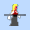
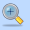

Drawing tools for views, fonts and cursors¶
The View, Font and Cursor editors all share a number of drawing tools that operate in a similar manner.
- Choosing a color
- The foreground and background colors used for drawing are set by left and right-clicking on the palette in the Toolbox pane. A drawing tool generally draws with the foreground color when left-clicking and dragging, and the background color when right-clicking and dragging.
- Pen style
- You can choose the current pen style in the Toolbox pane. When drawing lines or shape outlines, this also controls the thickness of the line or outline.
- Pen

- This lets you draw freehand onto your canvas with the foreground colour. The current pen size and shape can be set in the left-hand pane.
- Line
- This lets you draw lines with the current foreground color and pen size.
- Fill

- This flood fills an area of your canvas with the foreground colour.
- Replace color

- This lets you draw over sections of your canvas, replacing colours that match the background colour with the foreground colour. By double clicking into the image, all colours that match the background color are replaced.
- Flip

- You can flip the canvas horizontally or vertically with this tool.
- Dither
- The dithering button lets you draw with both the foreground and background colour, where normally only the foreground colour would be used. Other than the obvious uses, one thing this lets you do is easily make a view that is half transparent, by specifying one of the colours as being the transparent colour (this only applies to views and cursors). The - and + keys can be used to adjust the dither ratio between the two colors.
- Shape tools
- Six different shape tools are available: rectangle, ellipse and rounded rectangle. Each can be hollow or solid. Normally the shape will be anchored to the top-left or bottom-right. If you hold down SHIFT while drawing, the shape will be centered around the point you clicked.
- Invert

- This inverts the colours on your canvas. This is only available for EGA resources.
- Grayscale 
- This converts your image to grayscale. This is only available for EGA resources.
- Zoom 
- You can zoom in and out with this tool by left or right-clicking on the image. Zooming can also be accomplished with CTRL-minus or CTRL-plus, or the mouse wheel while holding the CTRL key.
- Eyedropper

- The eyedropper tool lets you set the foreground and background colors by left or right-clicking on the image.
- Transparent eyedropper

- This lets you set the current transparent color by clicking on a color in the image.
- Placement
- This lets you set the hotspot, or “center”, of the view or cursor by clicking on the image. It does not apply to fonts.
- Import image sequence

- This lets you import a sequence of images (or animated .gif) into a loop. See Import Image.
- Import image

- This lets you import a single image into a cel. See Import Image.
- Animate

- This brings up a dialog that animates the current loop of the view.